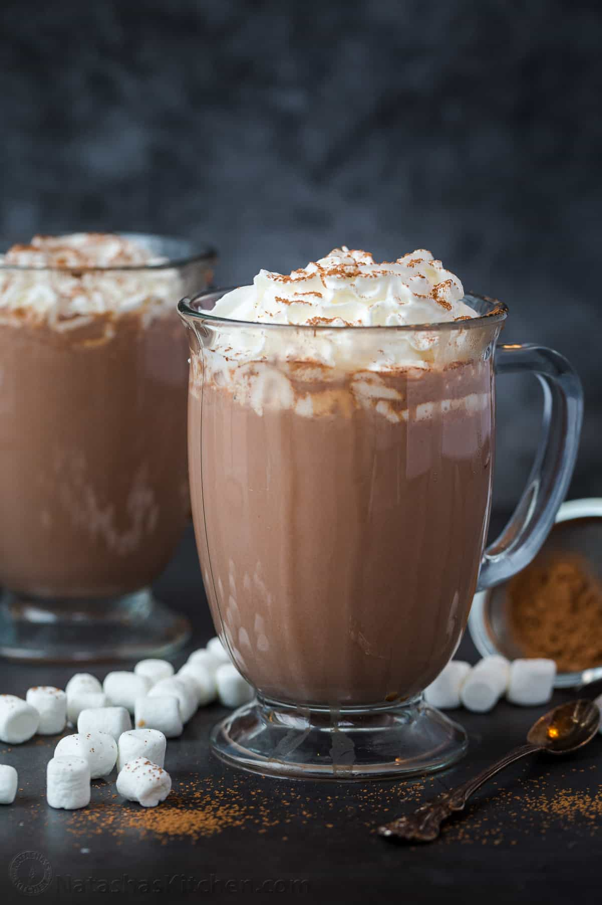

Hot chocolate is a comfort drink liked over all age groups and seasons
Ingredients
- milk
- cocoa powder
- sugar
- whipped cream
- pinch of salt
Steps
- Whisk together the cocoa, sugar, salt, and about 2 tablespoons milk in a small saucepan over medium-low heat until cocoa and sugar are dissolved.
- Whisk in the rest of the milk and heat it over medium heat, whisking occasionally, until it is hot. Stir in the vanilla and serve.
- If you like it frothy, blend it in the blender.
- This recipe multiplies easily. When you get up to a quart of milk, use ¼ teaspoon salt.